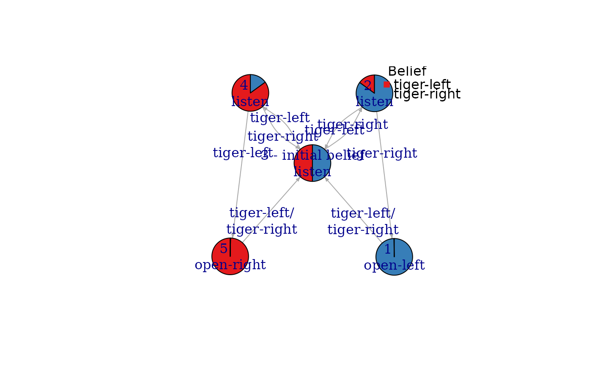
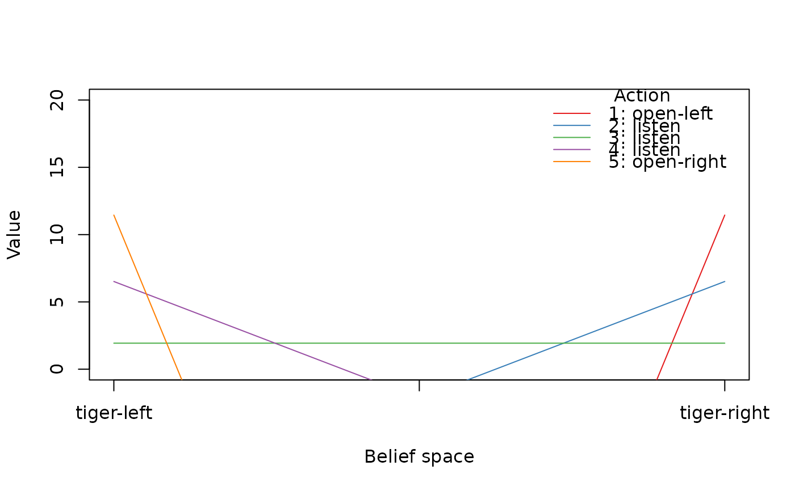
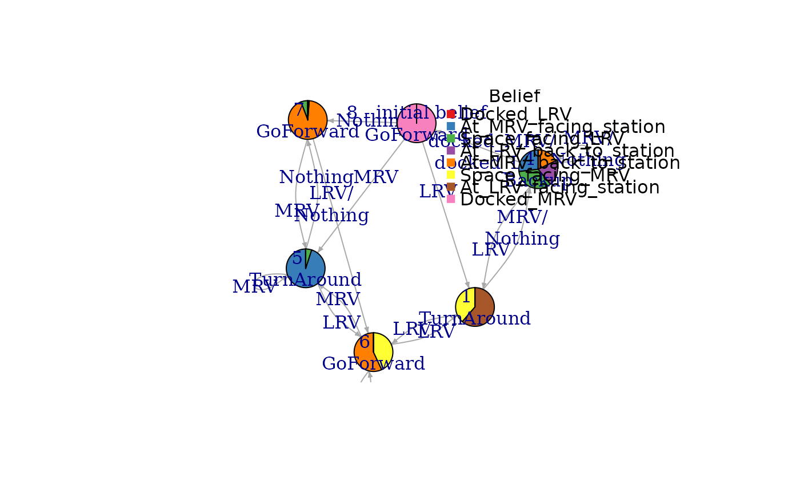
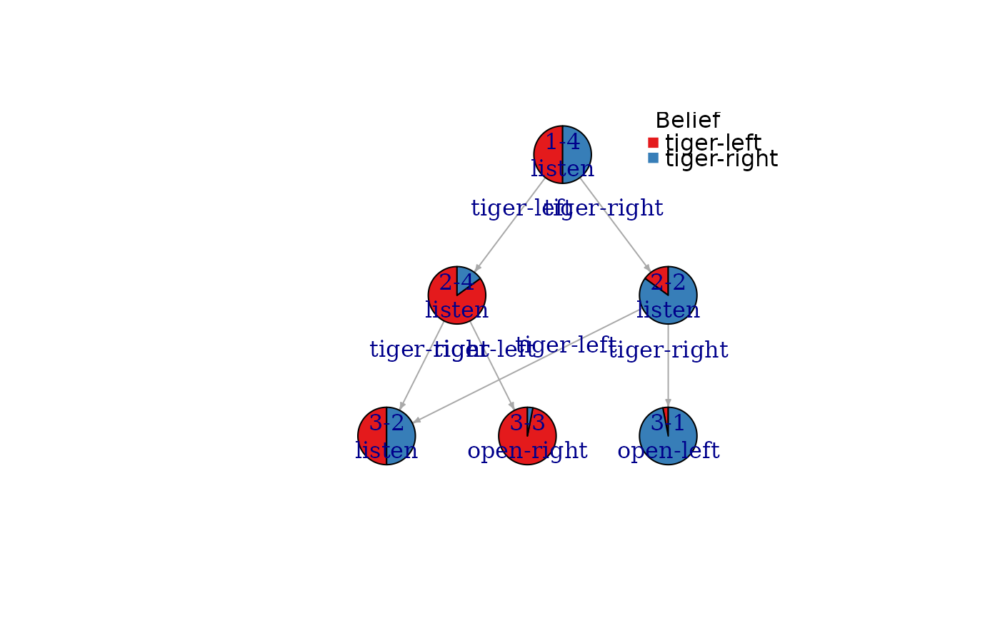
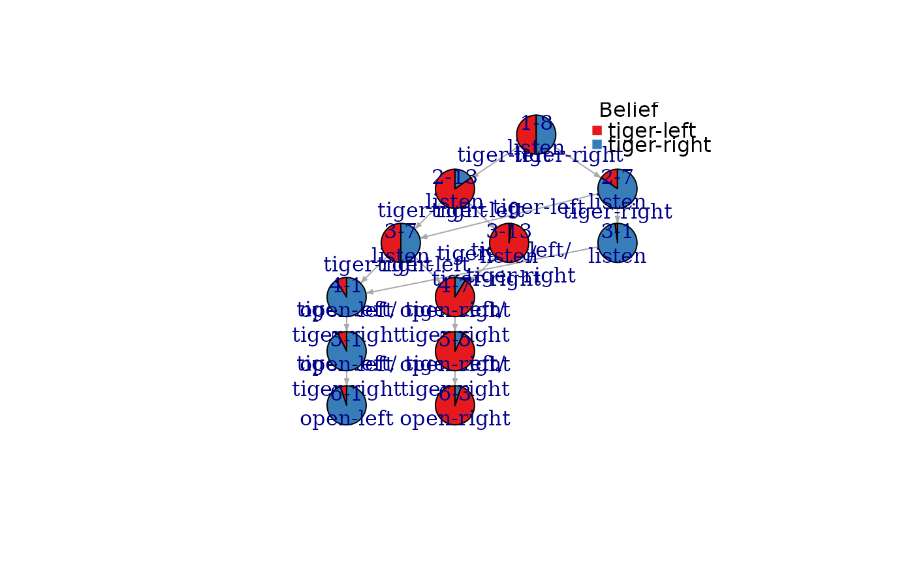
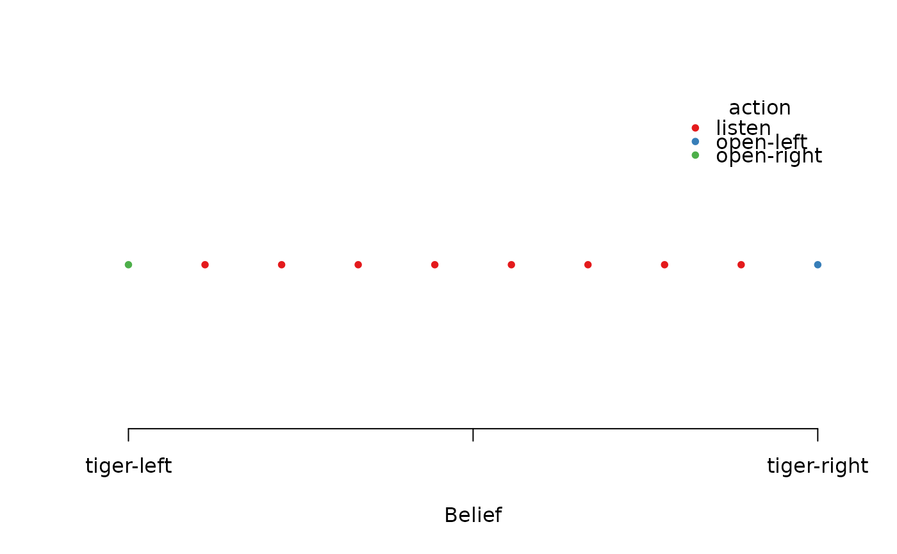
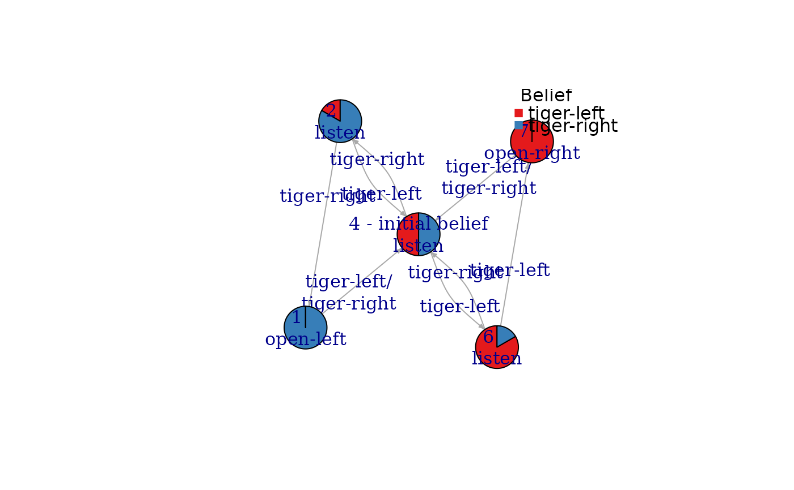
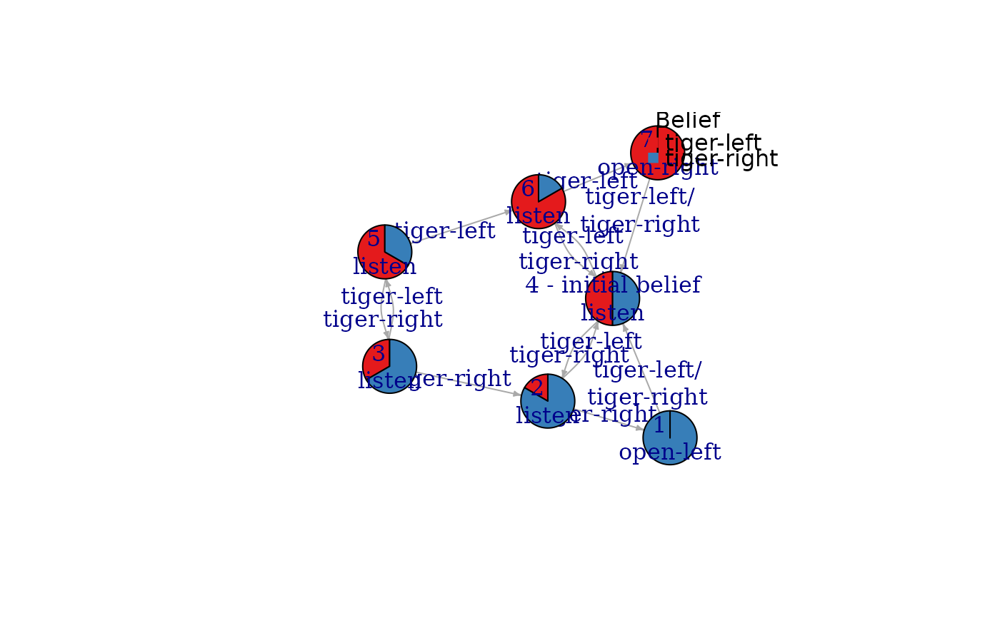

This function utilizes the C implementation of 'pomdp-solve' by Cassandra (2015) to solve problems that are formulated as partially observable Markov decision processes (POMDPs). The result is an optimal or approximately optimal policy.
Usage
solve_POMDP(
model,
horizon = NULL,
discount = NULL,
initial_belief = NULL,
terminal_values = NULL,
method = "grid",
digits = 7,
parameter = NULL,
timeout = Inf,
verbose = FALSE
)
solve_POMDP_parameter()Arguments
- model
a POMDP problem specification created with
POMDP(). Alternatively, a POMDP file or the URL for a POMDP file can be specified.- horizon
an integer with the number of epochs for problems with a finite planning horizon. If set to
Inf, the algorithm continues running iterations till it converges to the infinite horizon solution. IfNULL, then the horizon specified inmodelwill be used. For time-dependent POMDPs a vector of horizons can be specified (see Details section).- discount
discount factor in range \([0, 1]\). If
NULL, then the discount factor specified inmodelwill be used.- initial_belief
An initial belief vector. If
NULL, then the initial belief specified inmodel(as start) will be used.- terminal_values
a vector with the terminal utility values for each state or a matrix specifying the terminal rewards via a terminal value function (e.g., the alpha components produced by
solve_POMDP()). IfNULL, then, if available, the terminal values specified inmodelwill be used or a vector with all 0s otherwise.- method
string; one of the following solution methods:
"grid","enum","twopass","witness", or"incprune". The default is"grid"implementing the finite grid method.- digits
precision used when writing POMDP files (see
write_POMDP()).- parameter
a list with parameters passed on to the pomdp-solve program.
- timeout
number of seconds for the solver to run.
- verbose
logical, if set to
TRUE, the function provides the output of the pomdp solver in the R console.
Value
The solver returns an object of class POMDP which is a list with the
model specifications. Solved POMDPs also have an element called solution which is a list, and the
solver output (solver_output). The solution is a list that contains elements like:
methodused solver method.solver_outputoutput of the solver program.convergeddid the solution converge?initial_beliefused initial belief used.total_expected_rewardtotal expected reward starting from the initial belief.pg,initial_pg_nodethe policy graph (see Details section).alphavalue function as hyperplanes representing the nodes in the policy graph (see Details section).belief_points_solveroptional; belief points used by the solver.
Details
Parameters
solve_POMDP_parameter() displays available solver parameter options.
Horizon: Infinite-horizon POMDPs (horizon = Inf) converge to a
single policy graph. Finite-horizon POMDPs result in a policy tree of a
depth equal to the smaller of the horizon or the number of epochs to
convergence. The policy (and the associated value function) are stored in a
list by epoch. The policy for the first epoch is stored as the first
element. Horizon can also be used to limit the number of epochs used
for value iteration.
Precision: The POMDP solver uses various epsilon values to control
precision for comparing alpha vectors to check for convergence, and solving
LPs. Overall precision can be changed using
parameter = list(epsilon = 1e-3).
Methods: Several algorithms using exact value iteration are available:
Enumeration (Sondik 1971).
Two pass (Sondik 1971).
Witness (Littman, Cassandra, Kaelbling, 1996).
Incremental pruning (Zhang and Liu, 1996, Cassandra et al 1997).
In addition, the following approximate value iteration method is available:
Grid implements a variation of point-based value iteration to solve larger POMDPs (PBVI; see Pineau 2003) without dynamic belief set expansion.
Details can be found in (Cassandra, 2015).
Note on POMDP problem size: Finding optimal policies for POMDPs is known to be a prohibitively difficult problem because the belief space grows exponentially with the number of states. Therefore, exact algorithms can be only used for extremely small problems with only a few states. Typically, the researcher needs to simplify the problem description (fewer states, actions and observations) and choose an approximate algorithm with an acceptable level of approximation to make the problem tractable.
Note on method grid: The finite grid method implements a version of Point
Based Value Iteration (PBVI). The used belief points are created
using points that are reachable from the initial belief (start) by
following all combinations of actions and observations. The default size of the grid is
by 10,000 and
can be set via parameter = list(fg_points = 100). Alternatively,
different strategies can be chosen to generate the belief points.
using the parameter fg_type. In
this implementation, the user can also manually specify a grid of belief
points by providing a matrix with belief points as produced by
sample_belief_space() as the parameter grid.
To guarantee convergence in point-based (finite grid) value iteration, the
initial value function must be a lower bound on the optimal value function.
If all rewards are strictly non-negative, an initial value function with an
all-zero vector can be used, and results will be similar to other methods.
However, if the model contains negative rewards, lower bounds can be only
guaranteed by
using an initial value function vector with the values
\(min(reward)/(1 - discount)\).
In this case, the value function is guaranteed to converge to the true value
function in the infinite-horizon case, but
finite-horizon value functions may not converge. solve_POMDP()
produces a warning in this case. The correct value function can be obtained
by using simulate_POMDP() or switching to a different method.
Time-dependent POMDPs: Time dependence of transition probabilities, observation probabilities and reward structure can be modeled by considering a set of episodes representing epochs with the same settings. In the scared tiger example (see Examples section), the tiger has the normal behavior for the first three epochs (episode 1) and then becomes scared with different transition probabilities for the next three epochs (episode 2). The episodes can be solved in reverse order where the value function is used as the terminal values of the preceding episode. This can be done by specifying a vector of horizons (one horizon for each episode) and then lists with transition matrices, observation matrices, and rewards. If the horizon vector has names, then the lists also need to be named, otherwise they have to be in the same order (the numeric index is used). Only the time-varying matrices need to be specified. An example can be found in Example 4 in the Examples section. The procedure can also be done by calling the solver multiple times (see Example 5).
Solution
Policy:
Each policy is a data frame where each row representing a
policy graph node with an associated optimal action and a list of node IDs
to go to depending on the observation (specified as the column names). For
the finite-horizon case, the observation specific node IDs refer to nodes in
the next epoch creating a policy tree. Impossible observations have a
NA as the next state.
Value function: The value function specifies the value of the value function (the expected reward) over the belief space. The dimensionality of the belief space is $n-1$ where $n$ is the number of states. The value function is stored as a matrix. Each row is associated with a node (row) in the policy graph and represents the coefficients (alpha or V vector) of a hyperplane. It contains one value per state which is the value for the belief state that has a probability of 1 for that state and 0s for all others.
Temporary Files
All temporary solver files are stored in the directory returned by tempdir().
References
Cassandra, A. (2015). pomdp-solve: POMDP Solver Software, http://www.pomdp.org.
Sondik, E. (1971). The Optimal Control of Partially Observable Markov Processes. Ph.D. Dissertation, Stanford University.
Cassandra, A., Littman M.L., Zhang L. (1997). Incremental Pruning: A Simple, Fast, Exact Algorithm for Partially Observable Markov Decision Processes. UAI'97: Proceedings of the Thirteenth conference on Uncertainty in artificial intelligence, August 1997, pp. 54-61.
Monahan, G. E. (1982). A survey of partially observable Markov decision processes: Theory, models, and algorithms. Management Science 28(1):1-16.
Littman, M. L.; Cassandra, A. R.; and Kaelbling, L. P. (1996). Efficient dynamic-programming updates in partially observable Markov decision processes. Technical Report CS-95-19, Brown University, Providence, RI.
Zhang, N. L., and Liu, W. (1996). Planning in stochastic domains: Problem characteristics and approximation. Technical Report HKUST-CS96-31, Department of Computer Science, Hong Kong University of Science and Technology.
Pineau J., Geoffrey J Gordon G.J., Thrun S.B. (2003). Point-based value iteration: an anytime algorithm for POMDPs. IJCAI'03: Proceedings of the 18th international joint conference on Artificial Intelligence. Pages 1025-1030.
See also
Other policy:
estimate_belief_for_nodes(),
optimal_action(),
plot_belief_space(),
plot_policy_graph(),
policy(),
policy_graph(),
projection(),
reward(),
solve_SARSOP(),
value_function()
Other solver:
solve_MDP(),
solve_SARSOP()
Other POMDP:
MDP2POMDP,
POMDP(),
accessors,
actions(),
add_policy(),
plot_belief_space(),
projection(),
reachable_and_absorbing,
regret(),
sample_belief_space(),
simulate_POMDP(),
solve_SARSOP(),
transition_graph(),
update_belief(),
value_function(),
write_POMDP()
Examples
# display available solver options which can be passed on to pomdp-solve as parameters.
solve_POMDP_parameter()
#> Usage: /home/runner/work/_temp/Library/pomdpSolve/bin//pomdp-solve [opts...] [args...]
#> General options:
#> -pomdp <string>
#> -stdout <string>
#> -save_penultimate [ false, true ]
#> -stat_summary [ false, true ]
#> -verbose [ context, lp, global, timing, stats, cmdline, main,
#> alpha, proj, crosssum, agenda, enum, twopass, linsup,
#> witness, incprune, lpinterface, vertexenum, mdp, pomdp,
#> param, parsimonious, region, approx_mcgs, zlz_speedup,
#> finite_grid, mcgs ]
#>
#> Algorithm options:
#> -method [ enum, twopass, linsup, witness, incprune, grid, mcgs ]
#> -enum_purge [ none, domonly, normal_prune, epsilon_prune ]
#> -inc_prune [ normal, restricted_region, generalized ]
#> -fg_save [ false, true ]
#> -fg_type [ simplex, pairwise, search, initial, file ]
#> -fg_points <int>
#> -fg_purge [ none, domonly, normal_prune, epsilon_prune ]
#> -fg_nonneg_rewards [ false, true ]
#> -grid_filename <string>
#> -rand_seed <string>
#> -force_rounding [ false, true ]
#>
#> Value Iteration options:
#> -history_length <int>
#> -save_all [ false, true ]
#> -o <string>
#> -end_epsilon <double>
#> -start_epsilon <double>
#> -stop_delta <double>
#> -stop_criteria [ exact, weak, bellman ]
#> -terminal_values <string>
#> -discount <double>
#> -history_delta <int>
#> -epsilon_adjust <double>
#> -vi_variation [ normal, zlz, adjustable_epsilon, fixed_soln_size ]
#> -horizon <int>
#> -max_soln_size <double>
#>
#> Optimization options:
#> -epsilon <double>
#> -prune_epsilon <double>
#> -fg_epsilon <double>
#> -lp_epsilon <double>
#> -dom_check [ false, true ]
#> -q_purge [ none, domonly, normal_prune, epsilon_prune ]
#> -alg_rand <int>
#> -proj_purge [ none, domonly, normal_prune, epsilon_prune ]
#> -prune_rand <int>
#> -witness_points [ false, true ]
#>
#> Use the parameter options in solve_POMDP without the leading '-' in the form:
#> parameter = list(fg_points = 100)
#> Note: Not all parameter options are available (e.g., resource limitations, -pomdp, -horizon).
################################################################
# Example 1: Solving the simple infinite-horizon Tiger problem
data("Tiger")
Tiger
#> POMDP, list - Tiger Problem
#> Discount factor: 0.75
#> Horizon: Inf epochs
#> Size: 2 states / 3 actions / 2 obs.
#> Start: uniform
#> Solved: FALSE
#>
#> List components: ‘name’, ‘discount’, ‘horizon’, ‘states’, ‘actions’,
#> ‘observations’, ‘transition_prob’, ‘observation_prob’, ‘reward’,
#> ‘start’, ‘terminal_values’, ‘info’
# look at the model as a list
unclass(Tiger)
#> $name
#> [1] "Tiger Problem"
#>
#> $discount
#> [1] 0.75
#>
#> $horizon
#> [1] Inf
#>
#> $states
#> [1] "tiger-left" "tiger-right"
#>
#> $actions
#> [1] "listen" "open-left" "open-right"
#>
#> $observations
#> [1] "tiger-left" "tiger-right"
#>
#> $transition_prob
#> $transition_prob$listen
#> [1] "identity"
#>
#> $transition_prob$`open-left`
#> [1] "uniform"
#>
#> $transition_prob$`open-right`
#> [1] "uniform"
#>
#>
#> $observation_prob
#> $observation_prob$listen
#> tiger-left tiger-right
#> tiger-left 0.85 0.15
#> tiger-right 0.15 0.85
#>
#> $observation_prob$`open-left`
#> [1] "uniform"
#>
#> $observation_prob$`open-right`
#> [1] "uniform"
#>
#>
#> $reward
#> action start.state end.state observation value
#> 1 listen <NA> <NA> <NA> -1
#> 2 open-left tiger-left <NA> <NA> -100
#> 3 open-left tiger-right <NA> <NA> 10
#> 4 open-right tiger-left <NA> <NA> 10
#> 5 open-right tiger-right <NA> <NA> -100
#>
#> $start
#> [1] "uniform"
#>
#> $terminal_values
#> NULL
#>
#> $info
#> NULL
#>
# inspect an individual field of the model (e.g., the transition probabilities and the reward)
Tiger$transition_prob
#> $listen
#> [1] "identity"
#>
#> $`open-left`
#> [1] "uniform"
#>
#> $`open-right`
#> [1] "uniform"
#>
Tiger$reward
#> action start.state end.state observation value
#> 1 listen <NA> <NA> <NA> -1
#> 2 open-left tiger-left <NA> <NA> -100
#> 3 open-left tiger-right <NA> <NA> 10
#> 4 open-right tiger-left <NA> <NA> 10
#> 5 open-right tiger-right <NA> <NA> -100
sol <- solve_POMDP(model = Tiger)
sol
#> POMDP, list - Tiger Problem
#> Discount factor: 0.75
#> Horizon: Inf epochs
#> Size: 2 states / 3 actions / 2 obs.
#> Start: uniform
#> Solved:
#> Method: ‘grid’
#> Solution converged: TRUE
#> # of alpha vectors: 5
#> Total expected reward: 1.933439
#>
#> List components: ‘name’, ‘discount’, ‘horizon’, ‘states’, ‘actions’,
#> ‘observations’, ‘transition_prob’, ‘observation_prob’, ‘reward’,
#> ‘start’, ‘info’, ‘solution’
# look at the solution
sol$solution
#> POMDP solution
#>
#> $method
#> [1] "grid"
#>
#> $parameter
#> NULL
#>
#> $converged
#> [1] TRUE
#>
#> $total_expected_reward
#> [1] 1.933439
#>
#> $initial_belief
#> tiger-left tiger-right
#> 0.5 0.5
#>
#> $initial_pg_node
#> [1] 3
#>
#> $belief_points_solver
#> tiger-left tiger-right
#> [1,] 5.000000e-01 5.000000e-01
#> [2,] 8.500000e-01 1.500000e-01
#> [3,] 1.500000e-01 8.500000e-01
#> [4,] 9.697987e-01 3.020134e-02
#> [5,] 3.020134e-02 9.697987e-01
#> [6,] 9.945344e-01 5.465587e-03
#> [7,] 5.465587e-03 9.945344e-01
#> [8,] 9.990311e-01 9.688763e-04
#> [9,] 9.688763e-04 9.990311e-01
#> [10,] 9.998289e-01 1.711147e-04
#> [11,] 1.711147e-04 9.998289e-01
#> [12,] 9.999698e-01 3.020097e-05
#> [13,] 3.020097e-05 9.999698e-01
#> [14,] 9.999947e-01 5.329715e-06
#> [15,] 5.329715e-06 9.999947e-01
#> [16,] 9.999991e-01 9.405421e-07
#> [17,] 9.405421e-07 9.999991e-01
#> [18,] 9.999998e-01 1.659782e-07
#> [19,] 1.659782e-07 9.999998e-01
#> [20,] 1.000000e+00 2.929027e-08
#> [21,] 2.929027e-08 1.000000e+00
#> [22,] 1.000000e+00 5.168871e-09
#> [23,] 5.168871e-09 1.000000e+00
#> [24,] 1.000000e+00 9.121536e-10
#> [25,] 9.121536e-10 1.000000e+00
#>
#> $pg
#> $pg[[1]]
#> node action tiger-left tiger-right
#> 1 1 open-left 3 3
#> 2 2 listen 3 1
#> 3 3 listen 4 2
#> 4 4 listen 5 3
#> 5 5 open-right 3 3
#>
#>
#> $alpha
#> $alpha[[1]]
#> tiger-left tiger-right
#> [1,] -98.549921 11.450079
#> [2,] -10.854299 6.516937
#> [3,] 1.933439 1.933439
#> [4,] 6.516937 -10.854299
#> [5,] 11.450079 -98.549921
#>
#>
#> $solver_output
#> 0
#> //****************\\
#> || pomdp-solve ||
#> || v. 5.3 (R-mod) ||
#> \\****************//
#> - - - - - - - - - - - - - - - - - - - -
#> time_limit = 0
#> force_rounding = false
#> mcgs_prune_freq = 100
#> verbose = context
#> stdout =
#> inc_prune = normal
#> history_length = 0
#> prune_epsilon = 0.000000
#> save_all = true
#> o = /tmp/RtmpYLHnKZ/pomdp_1a9e446cf787-0
#> fg_save = true
#> enum_purge = normal_prune
#> fg_type = initial
#> fg_epsilon = 0.000000
#> mcgs_traj_iter_count = 1
#> lp_epsilon = 0.000000
#> end_epsilon = 0.000000
#> start_epsilon = 0.000000
#> dom_check = false
#> stop_delta = 0.000000
#> q_purge = normal_prune
#> pomdp = /tmp/RtmpYLHnKZ/pomdp_1a9e446cf787.POMDP
#> mcgs_num_traj = 1000
#> stop_criteria = weak
#> method = grid
#> memory_limit = 0
#> alg_rand = 0
#> terminal_values =
#> save_penultimate = false
#> epsilon = 0.000000
#> rand_seed =
#> discount = 0.750000
#> fg_points = 10000
#> fg_purge = normal_prune
#> fg_nonneg_rewards = false
#> proj_purge = normal_prune
#> mcgs_traj_length = 100
#> history_delta = 0
#> f =
#> epsilon_adjust = 0.000000
#> grid_filename =
#> prune_rand = 0
#> vi_variation = normal
#> horizon = 0
#> stat_summary = false
#> max_soln_size = 0.000000
#> witness_points = false
#> - - - - - - - - - - - - - - - - - - - -
#> [Initializing POMDP ... done.]
#> [Finite Grid Method:]
#> [Creating grid ... done.]
#> [Grid has 25 points.]
#> Grid saved to /tmp/RtmpYLHnKZ/pomdp_1a9e446cf787-0.belief.
#> The initial policy being used:
#> Alpha List: Length=1
#> <id=0: a=0>
#> ++++++++++++++++++++++++++++++++++++++++
#> Epoch: 1...3 vectors (delta=1.10e+02)
#> Epoch: 2...5 vectors (delta=7.85e+01)
#> Epoch: 3...5 vectors (delta=5.89e+01)
#> Epoch: 4...5 vectors (delta=4.42e+01)
#> Epoch: 5...5 vectors (delta=3.27e+01)
#> Epoch: 6...5 vectors (delta=2.45e+01)
#> Epoch: 7...5 vectors (delta=1.84e+01)
#> Epoch: 8...5 vectors (delta=1.37e+01)
#> Epoch: 9...5 vectors (delta=1.02e+01)
#> Epoch: 10...5 vectors (delta=7.68e+00)
#> Epoch: 11...5 vectors (delta=5.72e+00)
#> Epoch: 12...5 vectors (delta=4.29e+00)
#> Epoch: 13...5 vectors (delta=3.22e+00)
#> Epoch: 14...5 vectors (delta=2.41e+00)
#> Epoch: 15...5 vectors (delta=1.81e+00)
#> Epoch: 16...5 vectors (delta=1.36e+00)
#> Epoch: 17...5 vectors (delta=1.02e+00)
#> Epoch: 18...5 vectors (delta=7.63e-01)
#> Epoch: 19...5 vectors (delta=5.71e-01)
#> Epoch: 20...5 vectors (delta=4.29e-01)
#> Epoch: 21...5 vectors (delta=3.21e-01)
#> Epoch: 22...5 vectors (delta=2.41e-01)
#> Epoch: 23...5 vectors (delta=1.81e-01)
#> Epoch: 24...5 vectors (delta=1.35e-01)
#> Epoch: 25...5 vectors (delta=1.02e-01)
#> Epoch: 26...5 vectors (delta=7.62e-02)
#> Epoch: 27...5 vectors (delta=5.71e-02)
#> Epoch: 28...5 vectors (delta=4.28e-02)
#> Epoch: 29...5 vectors (delta=3.21e-02)
#> Epoch: 30...5 vectors (delta=2.41e-02)
#> Epoch: 31...5 vectors (delta=1.81e-02)
#> Epoch: 32...5 vectors (delta=1.35e-02)
#> Epoch: 33...5 vectors (delta=1.02e-02)
#> Epoch: 34...5 vectors (delta=7.62e-03)
#> Epoch: 35...5 vectors (delta=5.71e-03)
#> Epoch: 36...5 vectors (delta=4.28e-03)
#> Epoch: 37...5 vectors (delta=3.21e-03)
#> Epoch: 38...5 vectors (delta=2.41e-03)
#> Epoch: 39...5 vectors (delta=1.81e-03)
#> Epoch: 40...5 vectors (delta=1.36e-03)
#> Epoch: 41...5 vectors (delta=1.02e-03)
#> Epoch: 42...5 vectors (delta=7.62e-04)
#> Epoch: 43...5 vectors (delta=5.72e-04)
#> Epoch: 44...5 vectors (delta=4.29e-04)
#> Epoch: 45...5 vectors (delta=3.22e-04)
#> Epoch: 46...5 vectors (delta=2.41e-04)
#> Epoch: 47...5 vectors (delta=1.81e-04)
#> Epoch: 48...5 vectors (delta=1.36e-04)
#> Epoch: 49...5 vectors (delta=1.02e-04)
#> Epoch: 50...5 vectors (delta=7.63e-05)
#> Epoch: 51...5 vectors (delta=5.72e-05)
#> Epoch: 52...5 vectors (delta=4.29e-05)
#> Epoch: 53...5 vectors (delta=3.22e-05)
#> Epoch: 54...5 vectors (delta=2.42e-05)
#> Epoch: 55...5 vectors (delta=1.81e-05)
#> Epoch: 56...5 vectors (delta=1.36e-05)
#> Epoch: 57...5 vectors (delta=1.02e-05)
#> Epoch: 58...5 vectors (delta=7.64e-06)
#> Epoch: 59...5 vectors (delta=5.73e-06)
#> Epoch: 60...5 vectors (delta=4.30e-06)
#> Epoch: 61...5 vectors (delta=3.22e-06)
#> Epoch: 62...5 vectors (delta=2.42e-06)
#> Epoch: 63...5 vectors (delta=1.81e-06)
#> Epoch: 64...5 vectors (delta=1.36e-06)
#> Epoch: 65...5 vectors (delta=1.02e-06)
#> Epoch: 66...5 vectors (delta=7.65e-07)
#> Epoch: 67...5 vectors (delta=5.74e-07)
#> Epoch: 68...5 vectors (delta=4.30e-07)
#> Epoch: 69...5 vectors (delta=3.23e-07)
#> Epoch: 70...5 vectors (delta=2.42e-07)
#> Epoch: 71...5 vectors (delta=1.82e-07)
#> Epoch: 72...5 vectors (delta=1.36e-07)
#> Epoch: 73...5 vectors (delta=1.02e-07)
#> Epoch: 74...5 vectors (delta=7.66e-08)
#> Epoch: 75...5 vectors (delta=5.74e-08)
#> Epoch: 76...5 vectors (delta=4.31e-08)
#> Epoch: 77...5 vectors (delta=3.23e-08)
#> Epoch: 78...5 vectors (delta=2.42e-08)
#> Epoch: 79...5 vectors (delta=1.82e-08)
#> Epoch: 80...5 vectors (delta=1.36e-08)
#> Epoch: 81...5 vectors (delta=1.02e-08)
#> Epoch: 82...5 vectors (delta=7.67e-09)
#> Epoch: 83...5 vectors (delta=5.75e-09)
#> Epoch: 84...5 vectors (delta=4.31e-09)
#> Epoch: 85...5 vectors (delta=3.23e-09)
#> Epoch: 86...5 vectors (delta=2.43e-09)
#> Epoch: 87...5 vectors (delta=1.82e-09)
#> Epoch: 88...5 vectors (delta=1.36e-09)
#> Epoch: 89...5 vectors (delta=1.02e-09)
#> Epoch: 90...5 vectors (delta=0.00e+00)
#> ++++++++++++++++++++++++++++++++++++++++
#> Solution found. See file:
#> /tmp/RtmpYLHnKZ/pomdp_1a9e446cf787-0.alpha
#> /tmp/RtmpYLHnKZ/pomdp_1a9e446cf787-0.pg
#> ++++++++++++++++++++++++++++++++++++++++
#>
#>
#> FALSE
# policy (value function (alpha vectors), optimal action and observation dependent transitions)
policy(sol)
#> tiger-left tiger-right action
#> 1 -98.549921 11.450079 open-left
#> 2 -10.854299 6.516937 listen
#> 3 1.933439 1.933439 listen
#> 4 6.516937 -10.854299 listen
#> 5 11.450079 -98.549921 open-right
# plot the policy graph of the infinite-horizon POMDP
plot_policy_graph(sol)

# value function
plot_value_function(sol, ylim = c(0,20))

################################################################
# Example 2: Solve a problem specified as a POMDP file
# using a grid of size 20
file <- system.file("examples/shuttle_95.POMDP", package = "pomdp")
sol <- solve_POMDP(file, method = "grid",
parameter = list(fg_points = 20))
sol
#> POMDP, list - /home/runner/work/_temp/Library/pomdp/examples/shuttle_95.POMDP
#> Discount factor: 0.95
#> Horizon: Inf epochs
#> Size: 8 states / 3 actions / 5 obs.
#> Start: 0, 0, 0, 0, 0, 0, 0, 1
#> Solved:
#> Method: ‘grid’
#> Solution converged: TRUE
#> # of alpha vectors: 9
#> Total expected reward: 32.889725
#>
#> List components: ‘name’, ‘states’, ‘observations’, ‘actions’,
#> ‘start’, ‘discount’, ‘transition_prob’, ‘observation_prob’,
#> ‘reward’, ‘problem’, ‘horizon’, ‘solution’
policy(sol)
#> Docked_LRV At_MRV_facing_station Space_facing_LRV At_LRV_back_to_station
#> 1 29.92522 29.06026 32.63562 31.77076
#> 2 31.24524 29.06026 32.68220 31.77076
#> 3 31.24524 31.03267 37.13801 40.37995
#> 4 31.24524 31.50023 37.93708 40.37995
#> 5 31.24524 32.88972 33.28920 31.77076
#> 6 32.63533 28.24524 31.24524 31.04221
#> 7 32.63533 28.24524 31.24524 31.04221
#> 8 32.88972 28.24524 31.24524 31.04221
#> 9 32.88972 28.24524 31.24524 31.04221
#> At_MRV_back_to_station Space_facing_MRV At_LRV_facing_station Docked_MRV
#> 1 29.92522 36.04022 38.36096 29.92522
#> 2 31.24524 32.72165 38.36096 31.24524
#> 3 30.58974 29.64095 34.02125 31.24524
#> 4 30.58974 29.47751 35.79580 31.24524
#> 5 31.24524 31.04221 29.49010 31.24524
#> 6 34.35298 36.44291 33.44291 32.63533
#> 7 34.62076 31.77076 28.77076 32.63533
#> 8 33.02142 36.44291 33.44291 32.88972
#> 9 33.28920 31.77076 28.77076 32.88972
#> action
#> 1 TurnAround
#> 2 TurnAround
#> 3 Backup
#> 4 Backup
#> 5 TurnAround
#> 6 GoForward
#> 7 GoForward
#> 8 GoForward
#> 9 GoForward
plot_policy_graph(sol)

# Example 3: Solving a finite-horizon POMDP using the incremental
# pruning method (without discounting)
sol <- solve_POMDP(model = Tiger,
horizon = 3, discount = 1, method = "incprune")
sol
#> POMDP, list - Tiger Problem
#> Discount factor: 1
#> Horizon: 3 epochs
#> Size: 2 states / 3 actions / 2 obs.
#> Start: uniform
#> Solved:
#> Method: ‘incprune’
#> Solution converged: FALSE
#> # of alpha vectors: 15
#> Total expected reward: 2.720000
#>
#> List components: ‘name’, ‘discount’, ‘horizon’, ‘states’, ‘actions’,
#> ‘observations’, ‘transition_prob’, ‘observation_prob’, ‘reward’,
#> ‘start’, ‘info’, ‘solution’
# look at the policy tree
policy(sol)
#> [[1]]
#> tiger-left tiger-right action
#> 1 -102.0000 8.0000 listen
#> 2 -30.4725 7.7525 listen
#> 3 -5.2275 4.9475 listen
#> 4 2.7200 2.7200 listen
#> 5 4.9475 -5.2275 listen
#> 6 7.7525 -30.4725 listen
#> 7 8.0000 -102.0000 listen
#>
#> [[2]]
#> tiger-left tiger-right action
#> 1 -101.00 9.00 listen
#> 2 -16.85 7.35 listen
#> 3 -2.00 -2.00 listen
#> 4 7.35 -16.85 listen
#> 5 9.00 -101.00 listen
#>
#> [[3]]
#> tiger-left tiger-right action
#> 1 -100 10 open-left
#> 2 -1 -1 listen
#> 3 10 -100 open-right
#>
plot_policy_graph(sol)

# note: only open the door in epoch 3 if you get twice the same observation.
# Expected reward starting for the models initial belief (uniform):
# listen twice and then open the door or listen 3 times
reward(sol)
#> [1] 2.72
# Expected reward for listen twice (-2) and then open-left (-1 + (-1) + 10 = 8)
reward(sol, belief = c(1,0))
#> [1] 8
# Expected reward for just opening the right door (10)
reward(sol, belief = c(1,0), epoch = 3)
#> [1] 10
# Expected reward for just opening the right door (0.5 * -100 + 0.95 * 10 = 4.5)
reward(sol, belief = c(.95,.05), epoch = 3)
#> [1] 4.5
################################################################
# Example 3: Using terminal values (state-dependent utilities after the final epoch)
#
# Specify 1000 if the tiger is right after 3 (horizon) epochs
sol <- solve_POMDP(model = Tiger,
horizon = 3, discount = 1, method = "incprune",
terminal_values = c(0, 1000))
sol
#> POMDP, list - Tiger Problem
#> Discount factor: 1
#> Horizon: 3 epochs
#> Size: 2 states / 3 actions / 2 obs.
#> Start: uniform
#> Solved:
#> Method: ‘incprune’
#> Solution converged: FALSE
#> # of alpha vectors: 9
#> Total expected reward: 674.860000
#>
#> List components: ‘name’, ‘discount’, ‘horizon’, ‘states’, ‘actions’,
#> ‘observations’, ‘transition_prob’, ‘observation_prob’, ‘reward’,
#> ‘start’, ‘terminal_values’, ‘info’, ‘solution’
policy(sol)
#> [[1]]
#> tiger-left tiger-right action
#> 1 -3.0000 997.0000 listen
#> 2 366.1975 983.5225 listen
#> 3 496.5025 830.7775 listen
#> 4 680.2500 570.2500 open-right
#>
#> [[2]]
#> tiger-left tiger-right action
#> 1 -2.00 998.00 listen
#> 2 432.35 908.15 listen
#> 3 509.00 399.00 listen
#>
#> [[3]]
#> tiger-left tiger-right action
#> 1 -1 999 listen
#> 2 510 400 open-right
#>
# Note: The optimal strategy is to never open the left door. If we think the
# Tiger is behind the right door, then we just wait for the final payout. If
# we think the tiger might be behind the left door, then we open the right
# door, are likely to get a small reward and the tiger has a chance of 50\% to
# move behind the right door. The second episode is used to gather more
# information for the more important # final action.
################################################################
# Example 4: Model time-dependent transition probabilities
# The tiger reacts normally for 3 epochs (goes randomly two one
# of the two doors when a door was opened). After 3 epochs he gets
# scared and when a door is opened then he always goes to the other door.
# specify the horizon for each of the two different episodes
Tiger_time_dependent <- Tiger
Tiger_time_dependent$name <- "Scared Tiger Problem"
Tiger_time_dependent$horizon <- c(normal_tiger = 3, scared_tiger = 3)
Tiger_time_dependent$transition_prob <- list(
normal_tiger = list(
"listen" = "identity",
"open-left" = "uniform",
"open-right" = "uniform"),
scared_tiger = list(
"listen" = "identity",
"open-left" = rbind(c(0, 1), c(0, 1)),
"open-right" = rbind(c(1, 0), c(1, 0))
)
)
# Tiger_time_dependent (a higher value for verbose will show more messages)
sol <- solve_POMDP(model = Tiger_time_dependent, discount = 1,
method = "incprune", verbose = 1)
#>
#> +++++++++ time-dependent POMDP +++++++++
#> * Using time-dependent transition probabilities.
#>
#> ++++++++++++++++++++++++++++++++++++++++
#> Solving episode 2 of 2 (scared_tiger) with horizon 3
#>
#> ++++++++++++++++++++++++++++++++++++++++
#> Solving episode 1 of 2 (normal_tiger) with horizon 3
sol
#> POMDP, list - Scared Tiger Problem
#> Discount factor: 0.75
#> Horizon: 3 + 3 epochs
#> Size: 2 states / 3 actions / 2 obs.
#> Start: uniform
#> Solved:
#> Method: ‘incprune’
#> Solution converged: FALSE
#> # of alpha vectors: 62
#> Total expected reward: 23.037500
#>
#> List components: ‘name’, ‘discount’, ‘horizon’, ‘states’, ‘actions’,
#> ‘observations’, ‘transition_prob’, ‘observation_prob’, ‘reward’,
#> ‘start’, ‘terminal_values’, ‘info’, ‘solution’
policy(sol)
#> [[1]]
#> tiger-left tiger-right action
#> 1 -81.431400 28.568600 open-left
#> 2 -15.446250 26.628750 listen
#> 3 5.296725 25.808287 listen
#> 4 7.880656 25.680485 listen
#> 5 11.448090 25.063560 listen
#> 6 14.943997 24.434013 listen
#> 7 15.668212 23.978025 listen
#> 8 20.317500 20.317500 listen
#> 9 23.978025 15.668212 listen
#> 10 24.434013 14.943997 listen
#> 11 25.063560 11.448090 listen
#> 12 25.680485 7.880656 listen
#> 13 25.808287 5.296725 listen
#> 14 26.628750 -15.446250 listen
#> 15 28.568600 -81.431400 open-right
#>
#> [[2]]
#> tiger-left tiger-right action
#> 1 -82.00000 28.00000 listen
#> 2 -35.90450 27.67825 listen
#> 3 -30.16243 27.62813 listen
#> 4 -22.23480 27.38620 listen
#> 5 -14.46612 27.13932 listen
#> 6 -12.85675 26.96050 listen
#> 7 -2.52500 25.52500 listen
#> 8 13.74400 21.87850 listen
#> 9 15.77061 21.31049 listen
#> 10 18.56860 18.56860 listen
#> 11 21.31049 15.77061 listen
#> 12 21.87850 13.74400 listen
#> 13 25.52500 -2.52500 listen
#> 14 26.96050 -12.85675 listen
#> 15 27.13932 -14.46612 listen
#> 16 27.38620 -22.23480 listen
#> 17 27.62813 -30.16243 listen
#> 18 27.67825 -35.90450 listen
#> 19 28.00000 -82.00000 listen
#>
#> [[3]]
#> tiger-left tiger-right action
#> 1 -81.000000 29.000000 listen
#> 2 -26.770000 26.855000 listen
#> 3 -20.014625 26.520875 listen
#> 4 -10.688000 24.908000 listen
#> 5 -1.548375 23.262125 listen
#> 6 0.345000 22.070000 listen
#> 7 12.500000 12.500000 listen
#> 8 22.070000 0.345000 listen
#> 9 23.262125 -1.548375 listen
#> 10 24.908000 -10.688000 listen
#> 11 26.520875 -20.014625 listen
#> 12 26.855000 -26.770000 listen
#> 13 29.000000 -81.000000 listen
#>
#> [[4]]
#> tiger-left tiger-right action
#> 1 -80.0000 30.0000 open-left
#> 2 -16.2000 15.7000 listen
#> 3 -8.2525 13.4725 listen
#> 4 2.7200 2.7200 listen
#> 5 13.4725 -8.2525 listen
#> 6 15.7000 -16.2000 listen
#> 7 30.0000 -80.0000 open-right
#>
#> [[5]]
#> tiger-left tiger-right action
#> 1 -90.00 20.00 open-left
#> 2 -16.85 7.35 listen
#> 3 -2.00 -2.00 listen
#> 4 7.35 -16.85 listen
#> 5 20.00 -90.00 open-right
#>
#> [[6]]
#> tiger-left tiger-right action
#> 1 -100 10 open-left
#> 2 -1 -1 listen
#> 3 10 -100 open-right
#>
# note that the default method to estimate the belief for nodes is following a
# trajectory which uses only the first belief reached for each node. Random sampling
# can find a better estimate of the central belief of the segment (see nodes 4-1 to 6-3
# in the plots below).
plot_policy_graph(sol)
plot_policy_graph(sol, method = "random_sample")

################################################################
# Example 5: Alternative method to solve time-dependent POMDPs
# 1) create the scared tiger model
Tiger_scared <- Tiger
Tiger_scared$transition_prob <- list(
"listen" = "identity",
"open-left" = rbind(c(0, 1), c(0, 1)),
"open-right" = rbind(c(1, 0), c(1, 0))
)
# 2) Solve in reverse order. Scared tiger without terminal values first.
sol_scared <- solve_POMDP(model = Tiger_scared,
horizon = 3, discount = 1, method = "incprune")
sol_scared
#> POMDP, list - Tiger Problem
#> Discount factor: 1
#> Horizon: 3 epochs
#> Size: 2 states / 3 actions / 2 obs.
#> Start: uniform
#> Solved:
#> Method: ‘incprune’
#> Solution converged: FALSE
#> # of alpha vectors: 15
#> Total expected reward: 2.720000
#>
#> List components: ‘name’, ‘discount’, ‘horizon’, ‘states’, ‘actions’,
#> ‘observations’, ‘transition_prob’, ‘observation_prob’, ‘reward’,
#> ‘start’, ‘info’, ‘solution’
policy(sol_scared)
#> [[1]]
#> tiger-left tiger-right action
#> 1 -80.0000 30.0000 open-left
#> 2 -16.2000 15.7000 listen
#> 3 -8.2525 13.4725 listen
#> 4 2.7200 2.7200 listen
#> 5 13.4725 -8.2525 listen
#> 6 15.7000 -16.2000 listen
#> 7 30.0000 -80.0000 open-right
#>
#> [[2]]
#> tiger-left tiger-right action
#> 1 -90.00 20.00 open-left
#> 2 -16.85 7.35 listen
#> 3 -2.00 -2.00 listen
#> 4 7.35 -16.85 listen
#> 5 20.00 -90.00 open-right
#>
#> [[3]]
#> tiger-left tiger-right action
#> 1 -100 10 open-left
#> 2 -1 -1 listen
#> 3 10 -100 open-right
#>
# 3) Solve the regular tiger with the value function of the scared tiger as terminal values
sol <- solve_POMDP(model = Tiger,
horizon = 3, discount = 1, method = "incprune",
terminal_values = sol_scared$solution$alpha[[1]])
sol
#> POMDP, list - Tiger Problem
#> Discount factor: 1
#> Horizon: 3 epochs
#> Size: 2 states / 3 actions / 2 obs.
#> Start: uniform
#> Solved:
#> Method: ‘incprune’
#> Solution converged: FALSE
#> # of alpha vectors: 47
#> Total expected reward: 20.317500
#>
#> List components: ‘name’, ‘discount’, ‘horizon’, ‘states’, ‘actions’,
#> ‘observations’, ‘transition_prob’, ‘observation_prob’, ‘reward’,
#> ‘start’, ‘terminal_values’, ‘info’, ‘solution’
policy(sol)
#> [[1]]
#> tiger-left tiger-right action
#> 1 -81.431400 28.568600 open-left
#> 2 -15.446250 26.628750 listen
#> 3 5.296725 25.808287 listen
#> 4 7.880656 25.680485 listen
#> 5 11.448090 25.063560 listen
#> 6 14.943997 24.434013 listen
#> 7 15.668212 23.978025 listen
#> 8 20.317500 20.317500 listen
#> 9 23.978025 15.668212 listen
#> 10 24.434013 14.943997 listen
#> 11 25.063560 11.448090 listen
#> 12 25.680485 7.880656 listen
#> 13 25.808287 5.296725 listen
#> 14 26.628750 -15.446250 listen
#> 15 28.568600 -81.431400 open-right
#>
#> [[2]]
#> tiger-left tiger-right action
#> 1 -82.00000 28.00000 listen
#> 2 -35.90450 27.67825 listen
#> 3 -30.16243 27.62813 listen
#> 4 -22.23480 27.38620 listen
#> 5 -14.46612 27.13932 listen
#> 6 -12.85675 26.96050 listen
#> 7 -2.52500 25.52500 listen
#> 8 13.74400 21.87850 listen
#> 9 15.77061 21.31049 listen
#> 10 18.56860 18.56860 listen
#> 11 21.31049 15.77061 listen
#> 12 21.87850 13.74400 listen
#> 13 25.52500 -2.52500 listen
#> 14 26.96050 -12.85675 listen
#> 15 27.13932 -14.46612 listen
#> 16 27.38620 -22.23480 listen
#> 17 27.62813 -30.16243 listen
#> 18 27.67825 -35.90450 listen
#> 19 28.00000 -82.00000 listen
#>
#> [[3]]
#> tiger-left tiger-right action
#> 1 -81.000000 29.000000 listen
#> 2 -26.770000 26.855000 listen
#> 3 -20.014625 26.520875 listen
#> 4 -10.688000 24.908000 listen
#> 5 -1.548375 23.262125 listen
#> 6 0.345000 22.070000 listen
#> 7 12.500000 12.500000 listen
#> 8 22.070000 0.345000 listen
#> 9 23.262125 -1.548375 listen
#> 10 24.908000 -10.688000 listen
#> 11 26.520875 -20.014625 listen
#> 12 26.855000 -26.770000 listen
#> 13 29.000000 -81.000000 listen
#>
# Note: it is optimal to mostly listen till the Tiger gets in the scared mood. Only if
# we are extremely sure in the first epoch, then opening a door is optimal.
################################################################
# Example 6: PBVI with a custom grid
# Create a search grid by sampling from the belief space in
# 10 regular intervals
custom_grid <- sample_belief_space(Tiger, n = 10, method = "regular")
head(custom_grid)
#> tiger-left tiger-right
#> [1,] 0.0000000 1.0000000
#> [2,] 0.1111111 0.8888889
#> [3,] 0.2222222 0.7777778
#> [4,] 0.3333333 0.6666667
#> [5,] 0.4444444 0.5555556
#> [6,] 0.5555556 0.4444444
# Visualize the search grid
plot_belief_space(sol, sample = custom_grid)

# Solve the POMDP using the grid for approximation
sol <- solve_POMDP(Tiger, method = "grid", parameter = list(grid = custom_grid))
policy(sol)
#> tiger-left tiger-right action
#> 1 -98.5499208 11.4500792 open-left
#> 2 -10.8542987 6.5169374 listen
#> 3 -0.2263156 3.1290871 listen
#> 4 1.9334390 1.9334390 listen
#> 5 3.1290871 -0.2263156 listen
#> 6 6.5169374 -10.8542987 listen
#> 7 11.4500792 -98.5499208 open-right
plot_policy_graph(sol)

# note that plot_policy_graph() automatically remove nodes that are unreachable from the
# initial node. This behavior can be switched off.
plot_policy_graph(sol, remove_unreachable_nodes = FALSE)
